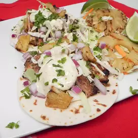

Jerk Chicken Tacos
Home

This is my easy recipe for grilled jerk chicken tacos that can be prepped,
cooked, and on your dinner table in less than 30 minutes.
If fresh pineapple is available, by all means use that instead.
Ingredients:
- 1/2 cups of mayonnaise
- 2 tablespoons jerk seasoning, divided
- 2 tablespoons lime juice,divided
- 1 tablespoon olive oil
- 11/2 pounds boneless, skinless chicken thighs
- 1 (20 ounce)can pineapple rings,drained
- 8(6 inch)flour tortillas
- 1 cup shredded cabbage
- 1/2 small red onion, minced
- 1/2 cup chopped fresh cilantro
Steps:
- Whisk mayonnaise, 1 tablespoon jerk seasoning, and
1 tablespoon lime juice together in a small bowl.
Set aside.
- Whisk olive oil, remaining jerk seasoning,
and remaining lime juice together in a separate bowl.
Add chicken and stir to coat
- Preheat an outdoor grill for medium-high heat and lightly oil the grate
- Place pineapple slices on the top rack of the grill.
Place chicken directly on the grill. Cook for 6 minutes.
Flip both pineapple and chicken over and grill until chicken is no longer pink,
about 6 minutes more. An instant-read thermometer inserted into the center
of the chicken should read at least 165 degrees F (74 degrees C).
Transfer to a cutting board and let rest for 5 minutes
- Slice the chicken into thin strips and divide between the tortillas.
Chop the pineapple and divide between the tortillas
- Top each each taco with shredded cabbage,
onion, and cilantro. Drizzle each with reserved sauce. Serve immediately